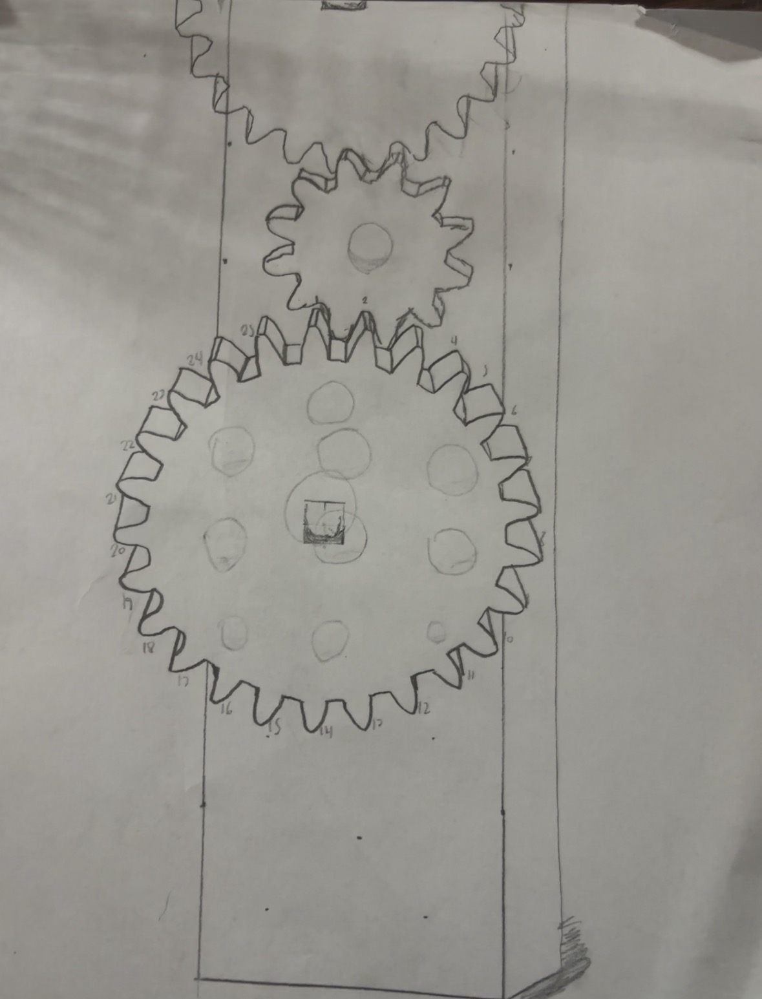

Part & Parcel Delivery Co. • Conveyor System for employee saftey and productivity
▲
▼
Design Overview
Our Conveyor / Rail System, helps with the ergonomic handling of packages in the Part and Pacel warehouse. By reducing the need for lifting and carrying for longer distances, our system helps reduce strain on the employees' backs and joints, thereby decreasing the risk of work-related injuries. This not only enhances employee well-being but also boosts overall productivity and efficiency in package handling operations. Because packages can be moved quickly from the employee's location straight into the delivery vehicle(s).
Client: Part & Parcel Delivery Company
Target Consumer: Delivery employees
Our Team: Eric K., Carson M., Carson G., Connor M.
Problem Statement
P&P Delivery employees handle packages all day and face repetative lifting, carrying, and strenuous work. These strains are causing poor efficiency and employee injury. Workers of P&P need a device that moves packages quicky and safely without constant bending or unnatural lifitng required of workers in order to prevent workplace injury.
Design Statement
We will design and prototype a pitch for a device, that will reduce and relive strain on workers at P&P, that is efficient and safe for employees, and that also reduces the required lifting and moving of packages within the warehouse to prevent injury. We will do so in a two week time frame by the deadline of December 12, 2025 and within a budget of $50.
Sketches

Criteria & Constraints
Criteria
1. Must result in more than one ergonomic Improvement 2. Doesn't reduce employee productivity or efficiency 3. Must be made out of VEQ Parts 4. Must be safe for employees to use in a warehouse environment
Constraints
1. Must be completed by December 12, 2025 2. Maximimum budget of $50 3. Uses classroom materials (VEX PARTS) 4. Under 10 pounds
Build Process
1. Get a base and have 6 metal rods, 3 medium gears, 3 small gears.
2. Line up metal rods and put gears on to them, making the pattern: medium, small, medium, small, medium, small.
3. Mirror it the other side of the rod with the correct gears and put the same size base on the top.
4. Repeat process 1 more time and connect to the original
5. Add supports and a ramp to get packages up easily.
Testing Results
In the video we test our model:
Final Prototype
Here are images of our final prototype. This model shows our conveyer/rail system that will carry packages a long distance from inside the warehouse to the dock station for the delivery vehicles.
The railway conveyor system improves ergonomics by reducing the need for workers to lift, carry, and bend while handling packages. Packages move along the rail, which minimizes bending, twisting, and reaching motions. This allows workers to maintain better posture and reduces strain on the back, shoulders, and arms. Overall, the system lowers physical injury chances and makes package handling safer and more efficient.
Final Reflections
This project showed us how engineering can improve real workplace tasks. Our railway conveyor system reduced lifting, bending, and carrying, making package handling easier and safer for workers. Testing and revising the design helped us fix issues and improve performance. A few things we could improve on are the stability of the platform, the length, and finding an alternative to the metal shafts due to their high cost. If we continued this project, we would improve the durability, side, lenths, stability, and capability of the design.